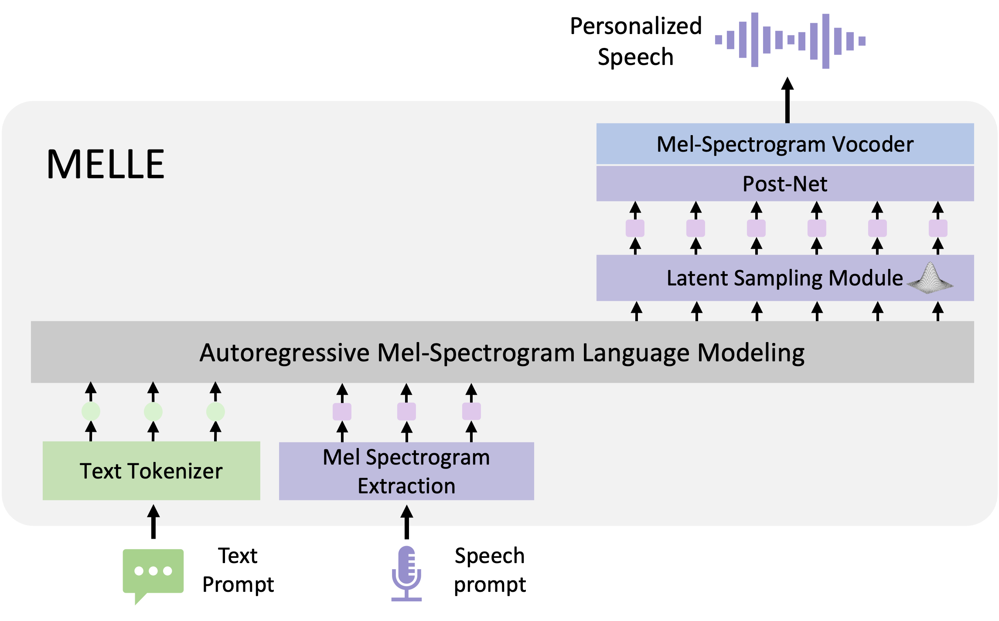

MELL-E
Autoregressive Speech Synthesis without Vector Quantization
Lingwei Meng*, Long Zhou#, Shujie Liu, Sanyuan Chen, Bing Han, Shujie Hu,
Yanqing Liu, Sheng Zhao, Jinyu Li, Xixin Wu, Helen Meng, Furu Wei
Abstract. We present a novel continuous-valued tokens based language modeling approach, referred to as MELL-E, for text to speech synthesis (TTS). MELL-E autoregressively generates continuous mel-spectrogram frames directly from text condition, bypassing the need for vector quantization, which are originally designed for audio compression and sacrifice fidelity compared to mel-spectrograms. Specifically, (i) instead of cross-entropy loss, we apply regression loss with a proposed spectrogram flux loss function to model the probability distribution of the continuous-valued tokens. (ii) we have incorporated variational inference into MELL-E to facilitate sampling mechanisms, thereby enhancing the output diversity and model robustness. Experiments demonstrate that, compared to the two-stage codec language models VALL-E and its variants, the single-stage MELL-E mitigates robustness issues by avoiding the inherent flaws of sampling discrete codes, achieves superior performance across multiple metrics, and, most importantly, offers a more streamlined paradigm.
This page is for research demonstration purposes only.
Contents
Model Overview

Figure. The overview of MELL-E. Unlike discrete-valued tokens based language modeling approaches, MELL-E generates the continuous variational mel-spectrogram conditioned on textual and acoustic prompts, using a single-stage decoder-only model as its foundational structures, coupled with the Latent Sampling Module.
Zero-Shot Text to Speech for Cross-Sentence Task
Samples are from LibriSpeech dataset.
| English Text | Speaker Prompt | VALL-E 2 | MELL-E | MELL-E-R2 |
|---|---|---|---|---|
| The influence that the Timaeus has exercised upon posterity is due partly to a misunderstanding. | ||||
| The utility of consumption as evidence of wealth is to be classed as a derivative growth. | ||||
| But the more forgetfulness had then prevailed, the more powerful was the force of remembrance when she awoke. | ||||
| It is such a noble ambition, that it is a pity, it usually has such a shallow foundatio. | ||||
| And often has my mother said, while on her lap I laid my head, she feared for time I was not made, but for Eternity. | ||||
| Now delia contrived to obtain a great influence and ascendency over the minds of the children, by means of these dolls. |
Zero-Shot Text to Speech for Continuation Task
Samples are from LibriSpeech dataset.
| English Text | Speaker Prompt | VALL-E 2 | MELL-E | MELL-E-R2 |
|---|---|---|---|---|
| "Then, dear," said Missus Whitney, "you must be kinder to her than ever. Think what it would be for one of you to be away from home, even among friends." | ||||
| In order to please her, I spoke to her of the Abbe Conti, and I had occasion to quote two lines of that profound writer | ||||
| He had preconceived ideas about everything, and his idea about Americans was that they should be engineers or mechanics. | ||||
| This was what did the mischief so far as the running away was concerned. | ||||
| Then he rushed downstairs into the courtyard, shouting loudly for his soldiers and threatening to punish everybody in his dominions if the sailorman was not recaptured. |
Ethics Statement
Since MELL-E could synthesize speech that maintains speaker identity, it may carry potential risks in misuse of the model, such as spoofing voice identification or impersonating a specific speaker. We conducted the experiments under the assumption that the user agree to be the target speaker in speech synthesis. If the model is generalized to unseen speakers in the real world, it should include a protocol to ensure that the speaker approves the use of their voice and a synthesized speech detection model.